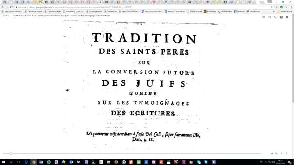

Sous le titre « Que contient le 2e tome du « Jésus » de Benoît XVI? », Jean Mercier, journaliste à La Vie, citait, sur le site de son journal, le 9 mars 2011, un passage de ce livre 1 touchant au sujet brûlant - et controversé - de la mission catholique aux Juifs. Il écrivait:
…le pape estime qu'il n'est pas possible de «convertir» les juifs au christianisme, et que ceci est renvoyé à l'horizon eschatologique de l'Histoire, lorsque tous les païens se seront éventuellement ouverts au Christ. Benoît XVI évoque longuement la question de la mission spécifique du peuple d'Israël et du rapport que les chrétiens doivent entretenir avec cette mission. Il part du verset énigmatique de l'Épître aux Romains (Rm 11, 25): « Une partie d'Israël s'est endurcie jusqu'à ce que soit entrée la totalité des païens, et ainsi tout Israël sera sauvé ».
Et le journaliste de citer cet extrait du livre du pape:
« En arrière-plan, nous avons toujours, à cet égard, la question concernant la mission d'Israël. Nous sommes aujourd'hui déconcertés devant les nombreux malentendus, lourds de conséquences, qui, à ce propos, ont pesé sur les siècles passés. Par une nouvelle réflexion, nous pouvons cependant reconnaître qu'au milieu de tous ces obscurcissements, la possibilité de mise en route d'une juste compréhension est toujours apparue. Je voudrais ici me référer à ce que Bernard de Clairvaux conseillait, concernant cette question, à son disciple le pape Eugène III. Il rappelle au pape qu'il ne lui pas été confié de prendre soin seulement des chrétiens: "Tu es également débiteur vis à vis des infidèles, des juifs, des Grecs et des païens" 2.Toutefois, il se corrige immédiatement en précisant: « j'admets que, pour ce qui concerne les juifs, tu as une excuse liée au temps; un moment précis a été déterminé pour eux, que l'on ne peut pas anticiper. Les païens doivent les précéder dans leur totalité." » 3 Je ferai grâce aux lecteurs des nombreux commentaires qu’a suscités cette évocation – au demeurant non engagée 4 – du pape, dans les mondes catholique, protestant et juif. Non qu’ils manquent d’intérêt, mais parce que mon but ici n’est ni anthologique ni documentaire, mais théologique, au sens large du terme, et spirituel.
Le meilleur commentaire que j’ai lu à ce jour sur ce sujet est le suivant: “POPE: Don’t Evangelize Jews! Really?”, Jimmy Akin’s Blog on National Catholic Register. Je compte le traduire en français, mais, d’ores et déjà, j’ai cru utile de le mettre en ligne en version originale sur Academia.edu.
En rassemblant la documentation nécessaire à l’étude diachronique que je compte faire sur la réflexion et l’attitude ecclésiales concernant la perspective d’une adhésion de foi du peuple juif à Jésus, j’ai eu la (bonne) surprise de découvrir un ouvrage dont j’ignorais totalement l’existence (je ne suis probablement pas le seul dans ce cas. Il s’agit d’une anthologie de commentaires patristiques sur Romains 11, 25 et autres passages néotestamentaires apparentés. Il a pour moi le grand avantage d’être rédigé en français, mais, comme rien n’est parfait, il nécessite un toilettage rédactionnel de grande envergure. En effet, il date du début du XVIIIe s. (1724) et tant son style que son vocabulaire rendent sa pensée absconse. En attendant d’en publier en ligne une transcription intégrale en français lisible, je reproduis ci-après la page de garde de l’ouvrage et l’Avertissement qui l’ouvre.

« Je suis saisi d'une tristesse profonde et mon cœur est pressé sans cesse d'une douleur violente; au point de désirer devenir moi-même anathème et être séparé de Jésus-Christ pour mes frères qui font du même sang que moi selon la chair, qui sont les Israélites, à qui appartient l’adoption des enfants de Dieu, la loi, la gloire, son alliance et ses promesses: dont les Patriarches sont les Pères, etc. »
Ce n'est pas seulement S. Paul qui tient ce langage: chacun des Saints le tient avec lui, voulant que la racine parvienne aussi au salut, avec les branches prises de l'olivier sauvage.
II ne sera pas hors de propos d’avertir qu'outre les passages que nous rapportons de S. Jérôme dans ce Recueil, on trouvera un endroit où ce Père parle longuement de la conversion des Juifs. C’est sur les Ch. 36 et 37 d'Ezéchiel. […] Or que S. Jérôme rapporte aussi ce qu'il dit à la
conversion future, c'est ce qui paraît nettement p 955, ligne 36. Nec ultra etc. jusqu'à la p. suivante. Et p. 963. l. 21. Hoc dicemus etc. Et ces témoignages sont d'autant plus considérables, que l'on voit aux mêmes endroits, que le saint Docteur est perpétuellement attentif à rejeter le système et les idées charnelles des Millénaristes. On peut assurer que ceux qui se donneront la peine de suivre avec application S. Jérôme sur ces deux Ch. 36. et 37. du Prophète, et de recueillir les principes qui y sont semés, y trouveront des trésors.
L'an dernier (1723) est paru un livre portant le titre extraordinaire de Mouaacah [héb. מועקה] 5, ou ceinture de douleur6. L’Auteur y prétend réfuter le Livre des Règles pour l’intelligence des Saintes Écritures de M. l’Abbé d'A. On pourra se faire une juste idée de la Mouaacah dans le Journal de Trévoux du mois de novembre dernier, où l'on en trouvera l’extrait. Cet extrait est fait avec justesse, avec esprit et avec solidité. Sa brièveté n'empêche pas qu'il ne renferme bien des choses remarquables. On y verra même des principes importants fur l’intelligence de l'Écriture, puisés dans les SS. Pères et spécialement dans S. Augustin. Nous en citerons dans ce Recueil un passage, qui a rapport à l'objet que nous nous proposons. Cet objet a ses limites: nous n'entreprenons point d'examiner tout ce qui est traité dans la Mouaacah. Nous nous arrêtons uniquement à deux points: à la conversion des Juifs, et à la mission future d'Élie. L’un et l'autre de ces événements font légendaires, si l'on en croit l’Auteur de la Mouaacah - C'est l'idée qu'il donne du premier dans son VIIIème chapitre, et du second dans le Vème. II est vrai qu'il affecte de confondre l’opinion des Millénaristes, remplie d'idées grossières et charnelles, avec le sentiment de l’Auteur des Règles touchant la conversion des Juifs. Mais il est vrai en même temps que l'Auteur des Règles ne lui en donne pas le moindre fondement, et qu'il est évident au contraire par tout ce qu'il dit, qu'il parle d'une conversion des Juifs à la foi en Jésus-Christ, dont la piété, telle qu'elle est prescrite par l’Evangile, sera le terme, et d'une conversion toute spirituelle, parfaitement semblable à celle des premiers Juifs qui se convertirent à la Prédication des Apôtres et des Disciples de Jésus-Christ.
Je ne sais si l'assurance avec laquelle parle cet Auteur contre l’attente de ces deux événements, la venue d'Élie, et la conversion des Juifs, sera capable de faire impression sur beaucoup de personnes. Au moins nous servira-t-elle d'occasion pour exposer ce que la tradition fournit en faveur de l’un et de l'autre Nous rapportons les passages des Pères Grecs et Latins, sans prétendre néanmoins les avoir épuisés. Les témoignages de quelques-uns des principaux Théologiens Scholastiques et de quelques Commentateurs de l’Écriture viennent ensuite. Et nous terminons cette
tradition par plusieurs passages tirés d'auteurs modernes qui, quoiqu'ils appartiennent à des Ecoles différentes, ne laissent pas de convenir sur les points dont il s'agit ici. Nous nous sommes proposé de représenter d'une manière simple et naturelle le sens des Auteurs dont nous rapportons les textes. Et c'est ce qui nous a fait préférer partout l’exactitude à l’élégance. Car dans un Recueil tel que celui-ci, l'on ne demande pas autre chose d'une Traduction, sinon qu'elle soit fidèle et conforme à l'original. Nous donnons le texte latin des Pères de l'Eglise latine à côté de la Traduction. Mais pour les Pères et les Auteurs de l’Eglise Grecque, nous avons cru qu'il était superflu d'en donner la version latine, et la difficulté seule de l’impression nous a empêché d'en donner le texte original. Nous avons eu soin néanmoins d'y remédier en quelque sorte en faisant la Traduction Française sur le Grec, qui pour cette raison se trouvera souvent différente des Traductions latines ordinaires.
Les passages de l’Écriture les plus précis et les plus connus, qui concernent les deux points qui font l'objet du Recueil, commencent la Tradition, ou plutôt en sont le fondement, et l'on verra dans la suite que tous les Pères et tous les Auteurs Ecclésiastiques les ont cités, où [sic] quelques-uns d'entre eux pour appuyer leurs sentiments.
On finit en priant le Lecteur d'observer
1. Jusqu'à quel point le consentement des Pères est unanime; qu'il est établi sur des vérités avouées de tous; et qu'il est indépendant de quelques allégories, dont l'application pourrait paraître peu naturelle à quelques personnes.
2. Qu'entre les Pères, quelques-uns ont été principalement attentifs à la conversion des Juifs, fans en examiner les suites avantageuses pour l'Eglise: mais que d'autres ont porté leurs vues plus loin, et qu'ils ont espéré que les Juifs, après leur con version, auraient à travailler et à souffrir pour la gloire de Jésus-Christ et pour les intérêts de son Eglise.
---------------------------- Ce n’est que quand j’aurai terminé le long travail de transcription de cette anthologie de commentaires patristiques autour de Romains 11, 25, sur l’entrée de la plénitude des nations et la fin de l’endurcissement partiel du peuple juif, pour reprendre le vocabulaire paulinien (Rm 11, 25), que je serai en mesure de procéder à l’étude théologique que je me propose d’entreprendre. Enfin, je me permets de renvoyer à une mienne étude un peu ancienne mais toujours utile, me semble-t-il, qui figure en ligne sur le site Academia.edu, sous le titre: « Élie et la conversion finale du peuple juif, à la lumière des sources rabbiniques et patristiques »
(À suivre). © Menahem R. Macina
1 Joseph Ratzinger - Benoît XVI, Jésus de Nazareth, Tome 2, 2011. ↩
2 Référence au De Consideratione (III/I,2) de Bernard de Clairvaux destiné au pape Eugene III. ↩
3 Id., Ibid., III/I,3). En latin: «De Iudeis, excusat te tempus: habent terminum suum, qui praeuniri non poterit. Plenitudine gentium praeire oportet » Les mises en exergue sont mon fait. ↩
4 Je veux dire par là que le pontife, qui écrit alors en théologien privé, ne se prononce pas sur la ‘note théologique’, voire magistérielle, qu’il conviendrait de donner à cette opinion. Encore moins la recommande-t-il. Toutefois, le fait que le pape y ait consacré un espace, même restreint, de son ouvrage, n’est pas anodin et témoigne au moins, me semble-t-il, de son intérêt bienveillant. ↩
5 Mouââcah, ceinture de douleur, ou Réfutation du livre intitulé « Règles pour l'intelligence des Saintes Écriture », par l'abbé Jacques-Joseph Duguet, composée par Rabbi Ismaël Ben-Abraham. En ligne sous forme de Google livre. ↩
6 Allusion à Ps 66, 11: « Tu as mis une affliction sur nos reins ». ↩